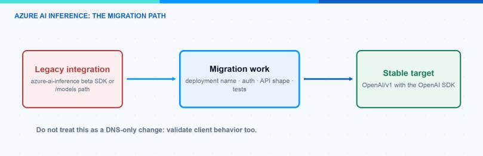
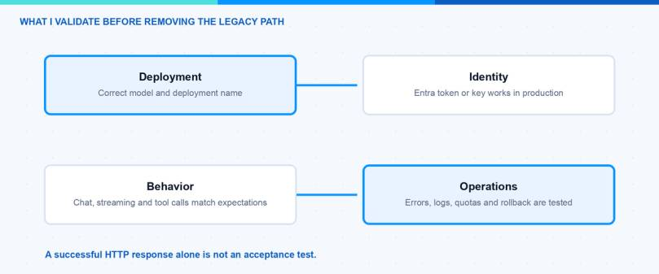

The Azure AI Inference SDK migration is now a real deadline, not a future cleanup task. Microsoft has deprecated the beta SDK and says it will retire on 26 August 2026. If an application still uses azure.ai.inference, ChatCompletionsClient, or a /models endpoint, I would plan the move to OpenAI v1 now.
In this blog post I explain how I would find an old integration, move it to the stable OpenAI SDK, and test the result before the deadline. The goal is not only to make one request work. The goal is to know which deployment, endpoint and identity your production workload will use.
Update 23.07.2026: Microsoft documents the Azure AI Inference beta SDK as deprecated and recommends the generally available OpenAI v1 API with a stable OpenAI SDK. The official migration guide is the source of truth for supported languages and endpoint details.
Azure AI Inference SDK Migration at a Glance
| Old integration | Target integration |
|---|---|
| Azure AI Inference beta SDK | Stable OpenAI SDK for your language |
ChatCompletionsClient |
OpenAI client |
https://<resource>.services.ai.azure.com/models |
OpenAI v1 endpoint shown for your resource |
| Model can be optional in some old flows | model must be your deployment name |
complete()-style calls |
chat.completions.create() or the appropriate OpenAI v1 operation |
The endpoint matters. For the common Azure OpenAI resource format, Microsoft shows https://<resource>.openai.azure.com/openai/v1/. Microsoft Foundry has more than one resource and endpoint pattern, so use the endpoint shown for your deployment rather than copying an old sample. The Microsoft Foundry endpoint documentation explains the resource-specific options.

How Can I Find Azure AI Inference SDK Usage?
I would start with code, configuration and documentation. Run this from the root of each repository:
rg -n -i \
"azure\.ai\.inference|@azure-rest/ai-inference|ChatCompletionsClient|AZURE_AI_INFERENCE|services\.ai\.azure\.com/models|/models" \
.
This catches the common Python and JavaScript packages, client names, environment variables and endpoint format. It is also worth searching deployment files, notebooks and examples. A small sample is often copied into the next production project.
For every result, record these five things before you change code:
- Workload and environment — for example, a production API, a development tool or a notebook.
- Microsoft Foundry resource and deployment name — the deployment name is what the OpenAI client sends as
model. - Authentication method — API key, managed identity or workload identity.
- Current endpoint and configuration owner — especially if the value comes from Key Vault or a pipeline variable.
- A proof test — one request that represents what users actually do.
Hint: Search GitHub Actions, Azure DevOps, Bicep, Terraform and Key Vault references too. Changing the package but keeping an old endpoint in a pipeline variable is an easy way to create a late production incident.
How Do I Prepare the Target Deployment?
Open the target Microsoft Foundry resource and check that the deployment is active. Copy its deployment name. Do not use only the public model family name: the deployment is the configured instance that your application can call.
Then check the things that can change runtime behaviour:
- Model and model version
- Capacity and rate limits
- Content filters or other policy settings
- Region and endpoint shown for that deployment
- Access for the identity used by the deployed workload
This small review makes the Azure AI Inference SDK migration predictable. A successful local request does not prove that the production identity can access the intended deployment.
How Do I Move to OpenAI v1?
Install the stable OpenAI package for your language. For Python, that is openai. Then point the standard OpenAI client at the OpenAI v1 endpoint for your resource and provide the deployment name as model.
pip install openai
Here is a minimal Python health check using an API key. Keep the values in your normal secret store; do not put them in source code.
import os
from openai import OpenAI
client = OpenAI(
base_url=os.environ["AZURE_OPENAI_ENDPOINT"].rstrip("/") + "/openai/v1/",
api_key=os.environ["AZURE_OPENAI_API_KEY"],
)
response = client.chat.completions.create(
model=os.environ["AZURE_OPENAI_DEPLOYMENT"],
messages=[
{"role": "user", "content": "Return a short health-check response."}
],
)
print(response.choices[0].message.content)
For Microsoft Entra ID, use the identity guidance for the exact Foundry resource you are migrating. The required audience and endpoint format can differ by resource type, so I would validate that configuration with the official migration guide before rolling it into a shared library.
What changes in the application code?
The client change is only one part of the migration:
- Replace the Azure AI Inference client with the OpenAI SDK client.
- Replace the old
/modelsendpoint with the OpenAI v1 endpoint for the target resource. - Always pass the deployment name in the
modelfield. - Update streaming, tool calls, exception handling and retry behaviour where the old client was used.
- Update package locks, examples and deployment variables in the same pull request.
Keeping these changes together makes the review much easier. It also prevents a repository from looking migrated while a pipeline still injects the old configuration.
How Do I Test the Azure AI Inference SDK Migration?
I would not remove the old configuration after one successful local request. First test in a development environment, then test with the same identity and configuration path that production uses.

| Check | What I test |
|---|---|
| Deployment | The exact deployment name exists and is active |
| Endpoint | The OpenAI v1 endpoint belongs to the target resource |
| Identity | The deployed workload can authenticate without a developer key |
| Application | Chat, streaming and tools behave as expected |
| Operations | Errors, throttling and token usage appear in the normal logs |
For an agent or a larger application, add the behaviours that matter to users: tool calls, structured output, streaming, retry logic and any content-filter handling. This is where a simple request test can hide a real regression.
Common Azure AI Inference SDK Migration Problems
Using a model name instead of a deployment name
The OpenAI v1 client needs the deployment name configured in your Microsoft Foundry resource. A model family name can look right but still produce a “model not found” error.
Changing the package but not the endpoint
Replacing azure-ai-inference with openai is not enough. Check the endpoint, the /openai/v1/ path, the deployment name and every pipeline or Key Vault reference together.
Testing only with a local credential
Local testing is useful, but it is not a production test. Test with the managed identity or workload identity used by the deployed application. This finds missing roles and incorrect token configuration early.
Forgetting examples and internal templates
Internal samples often become the next application. Update the sample, README and starter template in the same change. A short note that the old SDK is deprecated can prevent the problem from returning.
Azure AI Inference SDK Migration FAQ
Do I need to migrate every Azure OpenAI application?
No. This migration applies where the Azure AI Inference beta SDK or its old endpoint pattern is in use. Start with a repository inventory rather than changing applications that already use a supported client and endpoint.
Is OpenAI v1 the same as calling the public OpenAI service?
No. The OpenAI SDK is the client library pattern. Your application still calls the endpoint and deployment in your Microsoft Foundry or Azure OpenAI resource, using your organisation’s identity and configuration.
What should I do first?
Find the old clients and /models endpoints, choose one small workload, and validate it end to end. Then apply the same tested pattern to the remaining repositories before 26 August 2026.
What I Would Do Now
Start with the repository inventory. Then migrate one small workload to OpenAI v1 and keep the code, configuration and documentation change in one pull request. After it passes with the production identity, repeat the pattern for the remaining workloads.
If you also need to choose a model deployment, take a look at my Microsoft Foundry Model Router and Catalog post. For the migration itself, keep the official Microsoft migration guide close by because endpoint and authentication details depend on the target resource.
I hope this is a little help with your Azure AI Inference SDK migration.
Stay healthy, Cheers Jannik